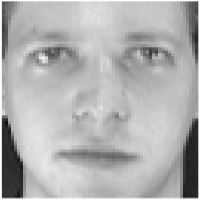
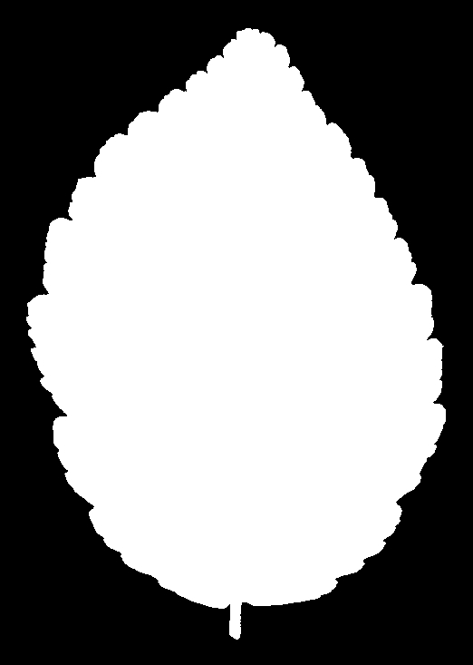
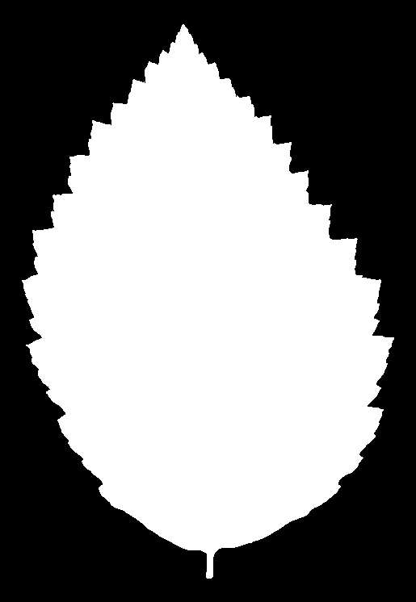
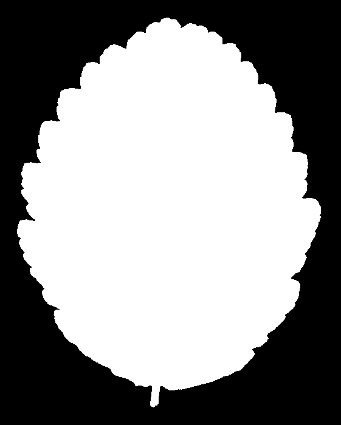
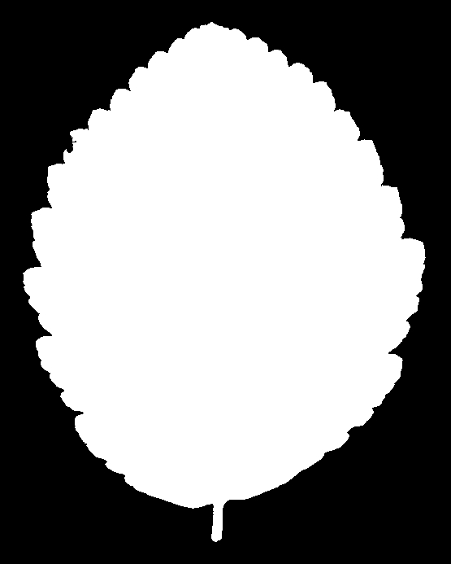
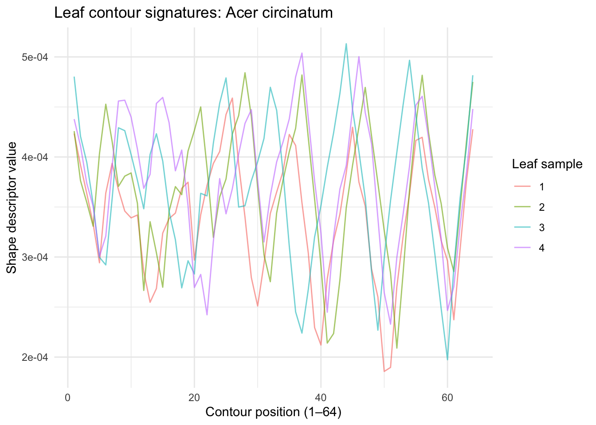
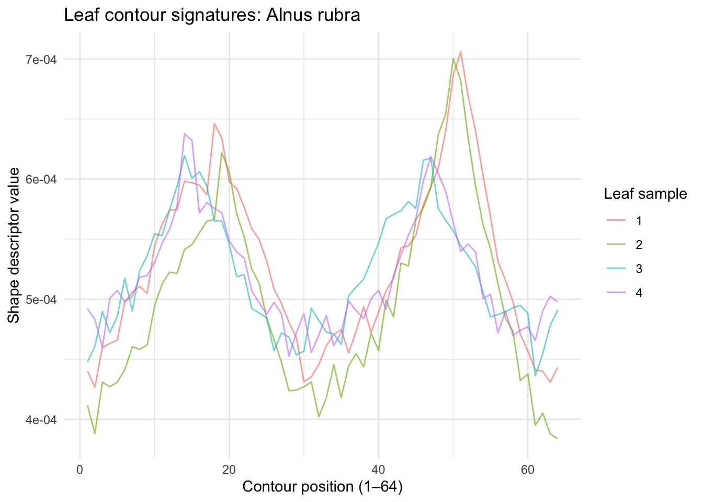
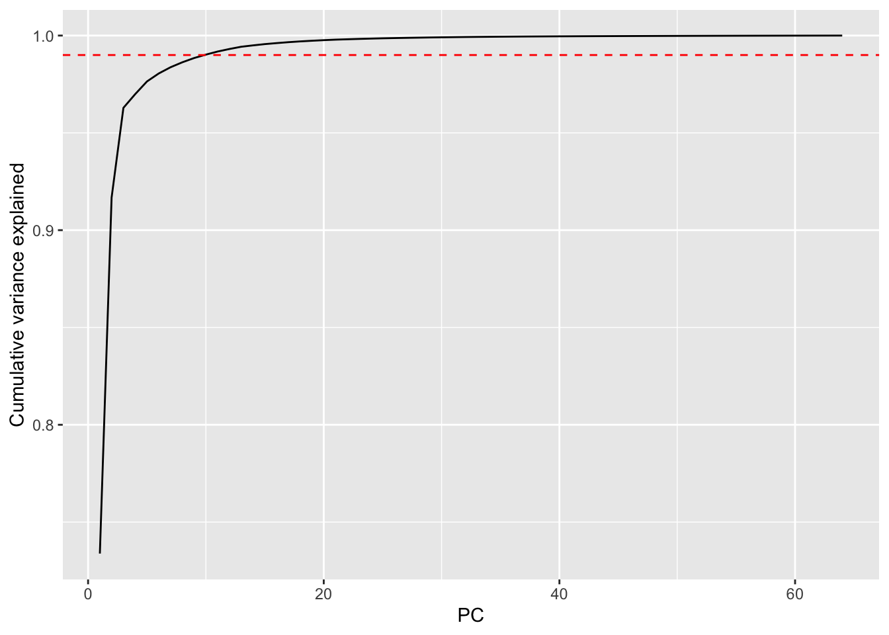
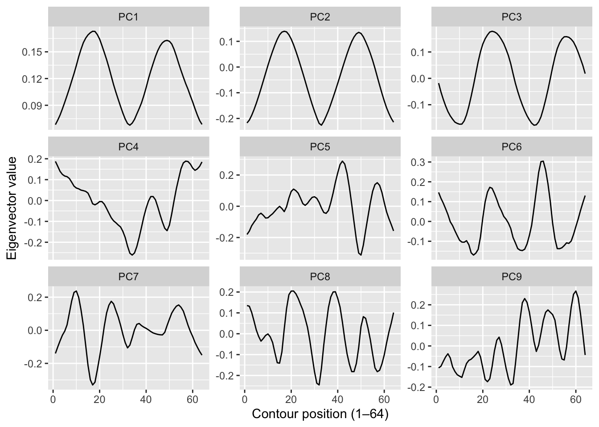

Code
library(tidyverse)
library(ggrepel)
set.seed(650) # for reproducibility of test/train data setsFacial recognition is a thing, right? Many of you unlock your phones with facial recognition. This is one way to implement a facial recognition scheme using PCA as a data reduction technique.
Note that we can use these techniques for cool environmental applications as well like species id, habitat classification, and so on.
library(tidyverse)
library(ggrepel)
set.seed(650) # for reproducibility of test/train data setsAs usual we’ll want tidyverse(Wickham 2023). And then just a little plotting help from ggrepel(Slowikowski 2026).
We are going to implement the so-called eigenfaces approach to facial recognition. It’s fascinating (and dystopian). I’d encourage you to read through these wikis and get a feel for what is out there.
We are going to use the famous (even historic!) Olivetti data set assembled by AT&T Laboratories in the early 1990s. The data consists of 400 images of 40 distinct people. These are 64x64 gray-scale images. Thus, each one has 4096 (64\(^2\)) pixels. The values are 8-bit integers which range from black at zero to white at 255 (Note that 8-bit is \(2^8=256\)). The images are low resolution by today’s standards but the data set is easy to work with. Here is the first image in the data.

At the AT&T lab 30 years ago, there were an awful lot of white guys walking the halls. So while these data are fantastic for learning purposes, it lacks quite a bit in capturing the diversity of human faces to say the very least! For other data sets that you can mess with, do a little googling and you’ll find plenty. I considered using the Labeled Faces in the Wild data but it’s just a hair too complex for our purposes. I really should add an ancillary page with those data and an assignment, but not right now.
Anyways, here we go.I’ll read the data in and give labels in names.
faces <- read_csv("data/faces.csv")
ids <- tibble(person = str_c("subject",
str_pad(rep(1:40,each=10), 2, pad = "0")),
rep = str_c("v",
str_pad(rep(1:10,times=40), 2, pad = "0")))
names(faces) <- str_c(ids$person,ids$rep)Each of the columns is an image. There are 10 pictures each of 40 different people. Each image is stored in a column – we’ll reshape it into a 2d matrix (or raster) in order to view it. E.g., here is the first subject.
longFaces <- faces %>% pivot_longer(cols = everything(),
names_to = "photo", values_to = "z")
longFaces <- longFaces %>%
add_column(x = rep(rep(seq(1,64),times=64),each = 400),
y = rep(rep(seq(1,64),each=64),each = 400)) %>%
separate(col = photo, c("subject", "image"), sep = 9, remove = FALSE)With all the data in a long format with x and y coordinates for plotting we can filter and plot subsets of the images. E.g., here is the first subject.
longFaces %>% filter(subject == "subject01") %>%
ggplot(mapping = aes(x=y,y=x,fill=z)) +
geom_raster() +
scale_fill_gradientn(colors = grey(seq(0, 1, length=256))) +
coord_fixed() +
theme_void() +
theme(legend.position = "none") +
facet_wrap(~image,nrow = 2)
Walk through what we did in the last two chunks. We took the faces data and made it long like good tidyverse coders. We added x and y coordinates (both are sequences from one to 64 representing the length and width of the images) and pulled out the info on the subjects and the photos. Here is the 35th subject. One of the rare non-dudes in these classically non-diverse data.
longFaces %>% filter(subject == "subject35") %>%
ggplot(mapping = aes(x=y,y=x,fill=z)) +
geom_raster() +
scale_fill_gradientn(colors = grey(seq(0, 1, length=256))) +
coord_fixed() +
theme_void() +
theme(legend.position = "none") +
facet_wrap(~image,nrow = 2)
And here is the first image for each of the 40 subjects.
longFaces %>% filter(image == "v01") %>%
ggplot(mapping = aes(x=y,y=x,fill=z)) +
geom_raster() +
scale_fill_gradientn(colors = grey(seq(0, 1, length=256))) +
coord_fixed() +
theme_void() +
theme(legend.position = "none") +
facet_wrap(~subject, ncol=8)
Because we have all the faces as vectors of the same length we can manipulate them like any numbers. So here is a completely spooky average of all the faces.
avgFace <- faces %>% reframe(z=rowMeans(.)) %>%
add_column(x = rep(seq(1,64),times=64),
y = rep(seq(1,64),each=64))
avgFace %>%
ggplot(mapping = aes(x=y,y=x,fill=z)) +
geom_raster() +
scale_fill_gradientn(colors = grey(seq(0, 1, length=256))) +
coord_fixed() +
theme_void() +
theme(legend.position = "none")
That’s a bit of a dream haunter, huh? But it shows that we can aggregate and extract information about these faces and show common variance among the faces.
We can look at how individual faces relate to the average face as well by subtraction. Here is the first picture of each subject substracted from the average face. That is each image is converted into a “difference from the average face.”
facesCentered <- sweep(faces, 1, avgFace$z, "-")
longFacesCentered <- facesCentered %>%
pivot_longer(cols = everything(),
names_to = "photo", values_to = "z") %>%
add_column(x = rep(rep(seq(1,64),times=64),each = 400),
y = rep(rep(seq(1,64),each=64),each = 400)) %>%
separate(col = photo, c("subject", "image"),
sep = 9, remove = FALSE)
longFacesCentered %>% filter(image == "v01") %>%
ggplot(mapping = aes(x=y,y=x,fill=z)) +
geom_raster() +
scale_fill_gradientn(colors = grey(seq(0, 1, length=256))) +
coord_fixed() +
theme_void() +
theme(legend.position = "none") +
facet_wrap(~subject, ncol=8)
While averaging is one way to reduce the dimensionality of these data, we know that other methods have a lot more to offer.
Go review your notes on PCA from ESCI 503 and watch this great video for a refresher.
We will use PCA for data reduction and find the commonality among the faces. Let’s reduce the faces data into its constitute components with prcomp. Note that I’m transposing the data to get the 4096 pixels as columns and the 400 images as rows. This will decompose, therefore, as 399 (n-1) principal components.
facesPCA <- prcomp(t(faces), center = TRUE, scale. = FALSE)We have the (square root) of the eigenvalues in the first element facesPCA$sdev with one value for each image (400). We have the eigenvectors in facesPCA$rotation with the same dimensions as the original data (4096 by 400) and the scores in facesPCA$x with each photo on each PC (400 by 400).
We can plot the cumulative variance explained via:
eigenvalues <- facesPCA$sdev^2
cumVar <- cumsum(eigenvalues) / sum(eigenvalues)
ggplot() +
geom_line(mapping = aes(x=1:length(cumVar),y=cumVar)) +
labs(x="PC",y="Cumulative variance explained")
From this we can see that we get more than 90% of the variance explained with about the first 75 (out of 400) PCs and 95% explained with about 120 PCs. This indicates that these data are highly reducible.
Let’s see what these “eigenfaces” look like.
eigenvectors <- facesPCA$rotation
# keep the first 9 vectors. why 9? because i'll make a 3x3 plot below
longEigenvectors <- as_tibble(eigenvectors[,1:9]) %>%
pivot_longer(cols = everything(),
names_to = "ev", values_to = "z") %>%
add_column(x = rep(rep(seq(1,64),times=64),each = 9),
y = rep(rep(seq(1,64),each=64),each = 9))
longEigenvectors %>% filter(ev == "PC1") %>%
ggplot(mapping = aes(x=y,y=x,fill=z)) +
geom_raster() +
scale_fill_gradientn(colors = grey(seq(1, 0, length=256))) +
coord_fixed() +
theme_void() +
theme(legend.position = "none")
That image is the first PC – here we can call it the first “eigenface.” Terrifying, huh? But this single vector explains about 20% of the variance in the entire faces data of 400 images. It doesn’t appear to map onto a specific facial feature (like “glasses” or “nose”) but corresponds to the general brightness of the image. Let’s look at the first nine PCs.
longEigenvectors %>%
ggplot(mapping = aes(x=y,y=x,fill=z)) +
geom_raster() +
scale_fill_gradientn(colors = grey(seq(1, 0, length=256))) +
coord_fixed() +
theme_void() +
theme(legend.position = "none") +
facet_wrap(~ev)
Here we see that some of these first few PCs (which explain >60% of the variance in the entire data set) seem to correspond to facial features. For instance, PC four seems to be related to eye shape, PC six seems to be related to nose location, PC eight is particular to eye brows. The presence or absence of chunky 1990s glasses seems spread across many of the PCs.
We can use the scores to see which faces are close together in the eigenspace and which are more distant. Below we will pull out the scores for each image and then average them by subject to get an average for each individual subject. We can then plot them in the eigenspace for the first two PCs. Photos that are far apart in the eigenspace should look pretty different from each other.
## plot subjects
scoresPCA <- data.frame(facesPCA$x)
scoresPCA <- rownames_to_column(scoresPCA, var = "photo") %>%
as_tibble() %>%
separate(col = photo, c("subject", "image"),
sep = 9, remove = FALSE)
avgScoresPCA <- scoresPCA %>% group_by(subject) %>%
summarise(PC1=mean(PC1),PC2=mean(PC2),
PC3=mean(PC3),PC4=mean(PC4))
ggplot(data=avgScoresPCA,
mapping=aes(x=PC1,y=PC2,label=subject)) +
geom_point() +
geom_text_repel()
We can see that subject eight and subject 34 are separated well on the first two PCs. Let’s see who they are.
longFaces %>% filter(subject == "subject08" |
subject == "subject34") %>%
filter(image == "v01") %>%
ggplot(mapping = aes(x=y,y=x,fill=z)) +
geom_raster() +
scale_fill_gradientn(colors = grey(seq(0, 1, length=256))) +
coord_fixed() +
theme_void() +
theme(legend.position = "none") +
facet_wrap(~subject)
Yeah. We can see that these pictures are very different.
Out of curiosity let’s see how the mapping looks on PC3 and PC4. These are further down in terms of explanatory power but still quite powerful.
ggplot(data=avgScoresPCA,
mapping=aes(x=PC3,y=PC4,label=subject)) +
geom_point() +
geom_text_repel()
Looks subjects 24 and 37 are distinct in this part of the space. Let’s take a look.
longFaces %>% filter(subject == "subject24" |
subject == "subject37") %>%
filter(image == "v01") %>%
ggplot(mapping = aes(x=y,y=x,fill=z)) +
geom_raster() +
scale_fill_gradientn(colors = grey(seq(0, 1, length=256))) +
coord_fixed() +
theme_void() +
theme(legend.position = "none") +
facet_wrap(~subject)
Yep. Wow. These are two very different looking people. We have to be careful about describing the PCs in terms of individual features (glasses, facial hair, etc.) but we can definitely see that they are extremely different looking.
Note that we can try other visualization methods although as always, our brains max out at 3D. We could use this to find similar or dissimilar faces in different parts of the eigenspace.
library(plotly)
library(viridis)
plot_ly(avgScoresPCA,
x = ~PC1, y = ~PC2, z = ~PC3,
color = ~subject,
colors = viridis_pal(option = "D")(40)) %>%
add_markers() %>% layout(scene = list(xaxis = list(title = 'PC1'),
yaxis = list(title = 'PC2'),
zaxis = list(title = 'PC3'))) %>%
layout(showlegend = FALSE)Identifying new instances of known subjects (people, plants, types of coffee mugs, whatever) is really common task in machine learning. So, let’s use the faces data and PCA to identify people with are known to the system but with pictures we haven’t seen before. This is a classic train and test situation.
We will start by pulling two random pix of each person for a test data set and leaving the other eight in for training.
testVec <- sample(1:10,2)
for(i in 1:39){
base <- i*10
testVec <- c(testVec,sample((base+1):(base+10),2))
}
# test images
ids[testVec,]# A tibble: 80 × 2
person rep
<chr> <chr>
1 subject01 v02
2 subject01 v01
3 subject02 v04
4 subject02 v09
5 subject03 v07
6 subject03 v06
7 subject04 v05
8 subject04 v01
9 subject05 v07
10 subject05 v01
# ℹ 70 more rows# train images
ids[-testVec,]# A tibble: 320 × 2
person rep
<chr> <chr>
1 subject01 v03
2 subject01 v04
3 subject01 v05
4 subject01 v06
5 subject01 v07
6 subject01 v08
7 subject01 v09
8 subject01 v10
9 subject02 v01
10 subject02 v02
# ℹ 310 more rowsfacesTest <- faces[,testVec]
facesTrain <- faces[,-testVec]Let’s run the PCA on the training data.
facesPCA <- prcomp(t(facesTrain), center = TRUE, scale. = FALSE)
eigenvalues <- facesPCA$sdev^2
eigenvectors <- facesPCA$rotation
scores <- facesPCA$xTo save space and computing time let’s keep the PCs that explain 95% of the variance. This isn’t really needed here since the data set is small, but if we have millions of images we’d want to do this for sure.
cumVar <- cumsum(eigenvalues) / sum(eigenvalues)
thres95 <- min(which(cumVar > 0.95))
thres95[1] 110# subset the PCs
eigenvectors <- eigenvectors[,1:thres95]
eigenvalues <- eigenvalues[1:thres95]
scores <- scores[,1:thres95]Here we will project the test faces (the photos the PCA hasn’t seen) into the PCA training space. Other than rescaling the new faces to match the old faces, this is just calculating the scores which we do with the eigenvectors.
# these are scores
testFaceProj <-scale(t(facesTest),
scale = facesPCA$scale,
center = facesPCA$center) %*% eigenvectors
dim(testFaceProj) # PCs by samples[1] 80 110Now we can get the distance between the test scores and the average scores for each subject. I have Euclidean distance, Manhattan distance, and Mahalanobis distance in the code below. I’ll use the taxicab (Manhattan) distance but if you want to change that just comment and uncomment the method you want. I could have written a function here to choose a method but this seemed like enough for one week.
subjects <- str_sub(rownames(scores),start=1,end=9)
subjectScores <- aggregate(scores,list(subjects),mean)
distMat <- matrix(data = NA, nrow = nrow(subjectScores), ncol = nrow(testFaceProj))
colnames(distMat) <- rownames(testFaceProj)
rownames(distMat) <- subjectScores$Group.1
for (j in 1:ncol(distMat)) {
x1 <- testFaceProj[j,]
for (i in 1:nrow(distMat)) {
x2 <- as.numeric(subjectScores[i,-1])
# Euclidean distance
#distMat[i,j] <- sqrt(sum((x1-x2)^2))
# Manhattan
#distMat[i,j] <- sum(abs(x1 - t(x2)))
# Mahalanobis
m <- x1/sqrt(eigenvalues[1:length(x1)])
n <- x2/sqrt(eigenvalues[1:length(x1)])
distMat[i,j] <- sqrt(t(m - n)%*%(m - n))
}
}The object distMat has the known subjects on the rows and the unknown photos in columns. Thus, the values in the matrix is the distance between the unknown photo and the known subjects.
Let’s look at the first test photo. You and I know this is one of the pictures of subject one and that the PCA space was built without it. In fact, names(facesTest)[1] is the image subject01v02. But the classification algorithm doesn’t know who this is. We can plot the distance between this unknown photo and all the known subjects.
tmp <- tibble(distances = distMat[,1], subjects=rownames(distMat))
ggplot(data = tmp) +
geom_point(mapping= aes(x=distances,y=reorder(subjects,distances))) +
labs(x="Distance", y="Known Subjects",
title = "Distance in eigenspace for unkown photo:",
subtitle = names(facesTest)[1])
We can see that this image is closest in the eigenspace to subject01 followed by subject30 and subject06 who are a good step away (and subject 17 is the most distant). So we did in fact find the right subject from this unknown photo. Kind of amazing.
We can look at all the test photos and pull out the minimum distance for each one and match it up in an error matrix. This is a very simple classification algorithm. We could set up other criteria and get a probabilistic understanding if we were feeling up to it. But again, since this module is just for fun, I’ll leave it simple for now.
colnames(distMat) <- ids$person[testVec]
accVec <- logical(ncol(distMat))
names(accVec) <- colnames(distMat)
for(i in 1:ncol(distMat)){
closestSubject <- rownames(distMat)[which.min(distMat[,i])]
accVec[i] <- closestSubject == colnames(distMat)[i]
}
accVecsubject01 subject01 subject02 subject02 subject03 subject03 subject04 subject04
TRUE TRUE TRUE TRUE FALSE TRUE TRUE TRUE
subject05 subject05 subject06 subject06 subject07 subject07 subject08 subject08
TRUE TRUE TRUE TRUE TRUE TRUE FALSE TRUE
subject09 subject09 subject10 subject10 subject11 subject11 subject12 subject12
TRUE TRUE TRUE TRUE TRUE TRUE TRUE TRUE
subject13 subject13 subject14 subject14 subject15 subject15 subject16 subject16
TRUE TRUE TRUE TRUE TRUE TRUE TRUE TRUE
subject17 subject17 subject18 subject18 subject19 subject19 subject20 subject20
TRUE TRUE TRUE TRUE TRUE TRUE TRUE TRUE
subject21 subject21 subject22 subject22 subject23 subject23 subject24 subject24
TRUE TRUE TRUE TRUE TRUE TRUE TRUE TRUE
subject25 subject25 subject26 subject26 subject27 subject27 subject28 subject28
TRUE TRUE TRUE TRUE TRUE TRUE TRUE TRUE
subject29 subject29 subject30 subject30 subject31 subject31 subject32 subject32
TRUE TRUE TRUE TRUE TRUE FALSE TRUE TRUE
subject33 subject33 subject34 subject34 subject35 subject35 subject36 subject36
TRUE TRUE TRUE TRUE TRUE TRUE TRUE TRUE
subject37 subject37 subject38 subject38 subject39 subject39 subject40 subject40
TRUE TRUE TRUE TRUE TRUE TRUE TRUE TRUE table(accVec)/length(accVec)accVec
FALSE TRUE
0.0375 0.9625 Astoundingly we classified almost all of them correctly (96.25%)!
I find the human facial recognition to be a little scary to be honest. It creeps me out. But I wanted you to see this kind of machine learning application in action and this is a classic example.
There are more benign applications for sure. The iNaturalist app and database are being used for automated species identification using machine learning and there is a rich literature out there on this kind of work. E.g., Wäldchen and Mäder (2018), Villon et al. (2020) and many more. In fact image processing and machine learning are showing up environmental research all over the place – camera traps, illegal wildlife trade from social media posts, habitat classification from remote sensing, carbon budgets, the works.
Some of the techniques and methods used differ (e.g., neural nets are often combined with data reduction) but if you are interested and want to learn more this basic walk through will get you rolling.
Which brings us to your work.
OK so now it’s your turn. We’re going to run the same pipeline you just watched – PCA for data reduction, nearest-neighbor classification, train and test – but on plant leaves instead of human faces. It’s a much more direct environmental application, and it turns out the conceptual structure is almost identical. Faces are flattened into pixel vectors; leaves are described by shape descriptor vectors. The math doesn’t know the difference.
We’ll use the One-Hundred Plant Species Leaves data set from the UCI Machine Learning Repository. It contains 16 samples of leaves from each of 100 plant species, with three different 64-element descriptor vectors per sample: shape, margin texture, and fine-scale texture. We’re going to use the shape descriptor, which encodes the outline geometry of the leaf as a contour signature. Each row is one leaf. The first column is the species label (an integer from 1 to 100) and the remaining 64 columns are the shape descriptor values.
leafShape <- read_csv("data/data_Sha_64.txt", col_names = FALSE)
# first column is the species label, the rest are shape descriptor values
names(leafShape)[1] <- "species"
names(leafShape)[2:65] <- str_c("shapeValue", 1:64)
leafShape <- leafShape %>% mutate(species = factor(species))There are 1600 rows (100 species \(\times\) 16 samples) and 65 columns (1 label + 64 descriptor values). Look at the data be sure you understand how it’s formatted.
Ok. One thing is driving me bonkers with this. The genera names are supposed to be capitalized. The species names are not. I’m going to fix that.
leafShape <- leafShape %>%
mutate(species = str_replace(species, "(?<=\\s)\\S+", str_to_lower))(?<=\\s)\\S+ matches the first non-whitespace run that follows a space (i.e., the species name) and str_to_lower lowercases it. So “Acer Campestre” becomes “Acer campestre”. Not a biggie but it was bugging me.
There are a few species in there that are hybrids (e.g., “Prunus X Shmittii”) and one that is only classified to genus (i.e., “Phildelphus”). We could take those out I suppose. They annoy me but that’s my own issue. It doesn’t matter for our purposes I guess.
That data matrix is fine for running PCA. I kind of have a hard time wrapping my head around that as a matrix. I’ll make it long kind of how we did that above with the faces.
leafShapeLong <- leafShape %>% group_by(species) %>%
mutate(sample = row_number()) %>%
pivot_longer(cols = shapeValue1:shapeValue64, names_to = "contourPosition", values_to = "shapeValue") %>%
mutate(contourPosition = as.integer(str_remove(contourPosition, "shapeValue")))Before diving into the numbers, it helps to see what we’re actually working with. Here are four binary silhouette images of Acer circinatum (Vine Maple). These are four of the 16 samples for this species.
And for Alnus rubra (Red alder)
 |
 |
 |
 |
These silhouettes are what was fed into the feature extraction pipeline that produced the data set we are using. But we are not working with these images directly. For each silhouette, the researchers computed a 64-element shape descriptor – a numerical summary of the leaf’s outline geometry. Think of it as a compact fingerprint of the shape: you can’t reconstruct the image from the numbers, but leaves of the same species produce similar fingerprints, and that similarity is what the classifier exploits.
Unlike pixel images, the shape descriptors here are contour signatures – essentially a waveform that traces the outline of the leaf at 64 equally-spaced points around its perimeter. You can plot them as line plots. Let’s look at the data for the first four samples of Acer circinatum (Vine Maple).
leafShapeLong %>% filter(species == "Acer circinatum") %>%
filter(sample %in% 1:4) %>%
ggplot(aes(x = contourPosition, y = shapeValue, color = as.factor(sample))) +
geom_line(alpha = 0.6) +
labs(x = "Contour position (1–64)",
y = "Shape descriptor value",
title = "Leaf contour signatures: Acer circinatum",
color = "Leaf sample") +
theme_minimal()
The 64 values don’t represent pixel brightness — they encode the geometry of the leaf’s outline at 64 points around its perimeter. Think of it as a numerical fingerprint of the leaf’s shape. Peaks in the waveform correspond to sharp features like the leaf tip; the valleys correspond to smoother regions. Within a species, these waveforms should be similar. Across species, they should differ.
Let’s look at the same but for a totally different species. Here are the first four samples of Alnus rubra.
leafShapeLong %>% filter(species == "Alnus rubra") %>%
filter(sample %in% 1:4) %>%
ggplot(aes(x = contourPosition, y = shapeValue, color = as.factor(sample))) +
geom_line(alpha = 0.6) +
labs(x = "Contour position (1–64)",
y = "Shape descriptor value",
title = "Leaf contour signatures: Alnus rubra",
color = "Leaf sample") +
theme_minimal()
Those are really distinct! Let’s see if a PCA approach like the eigenfaces works here.
The data in leafShape are already in the right orientation – one leaf per row, 64 shape values as columns. No transpose needed. Run prcomp with center = TRUE on just the descriptor columns (not the species label). Plot cumulative variance explained. Looks like 10 PCs get 99% of the variance.
How does this compare to the face data? You needed about 120 PCs to hit 95% variance in the faces. How many do you need here? What does that tell you about the structure of leaf shape variation compared to the structure of face variation?
X <- leafShape %>% select(-species) %>% as.matrix()
leafPCA <- prcomp(X, center = TRUE, scale. = FALSE)
eigenvalues <- leafPCA$sdev^2
cumVar <- cumsum(eigenvalues) / sum(eigenvalues)
ggplot() +
geom_line(aes(x = 1:length(cumVar), y = cumVar)) +
geom_hline(yintercept = 0.99, linetype = "dashed", color = "red") +
labs(x = "PC", y = "Cumulative variance explained")
thres99 <- min(which(cumVar > 0.99))
thres99[1] 10Here are the first nine eigenvector values.
eigenvectors <- leafPCA$rotation
as_tibble(t(eigenvectors[, 1:9])) %>%
mutate(PC = str_c("PC", 1:9)) %>%
pivot_longer(cols = -PC, names_to = "position", values_to = "value") %>%
mutate(position = as.integer(str_remove(position, "shapeValue"))) %>%
ggplot(aes(x = position, y = value)) +
geom_line() +
facet_wrap(~PC, scales = "free_y") +
labs(x = "Contour position (1–64)", y = "Eigenvector value")
With the faces data we could plot the eigenvectors as images and they looked like spooky ghost faces. You might expect something similar here – “eigenleaves” that look like abstract leaf shapes. They don’t. The shape descriptors are already a mathematical abstraction of the outline, so the eigenvectors of those descriptors are an abstraction of an abstraction. They’re just wiggly lines with no obvious biological interpretation.
That’s fine and actually worth noting: PCA doesn’t always produce interpretable components. Here it’s doing a purely instrumental job – compressing 64 dimensions down to a handful that capture most of the variance, so that nearest-neighbor distance in that reduced space is fast and meaningful. The biology is in the classification result, not the eigenvectors.
Let’s get to work on classifying. Average the PCA scores for each species across its 16 samples and plot them in the space of the first two PCs, labeled by species number. Which species are close together? Which are far apart? If you happen to know what some of the species are (the data set includes taxa like Quercus, Salix, Acer, and many others – see the paper for the full list), do the groupings make any botanical sense?
# your species map hereHold out four of the 16 samples per species as a test set (25% holdout: 1200 leaves for training, 400 for testing). Rerun PCA on the training leaves only. Project the test leaves into that training PCA space, calculate Mahalanobis-style distances to the mean score for each species, and classify by nearest neighbor – exactly as we did with the faces.
Report your overall accuracy. Higher or lower than the faces result (96.25%)? Think carefully about why. You have 100 species instead of 40 people, which makes the problem harder by definition. But you also have a richer descriptor space that is specifically designed to capture shape. Does that help?
# your train/test/classify code hereInclude a short reflection. What worked? What surprised you? If accuracy is lower than you hoped, what would you try next – more PCs, a different descriptor (margin? texture?), a different distance metric? What if we tried to classify to genus instead of species?